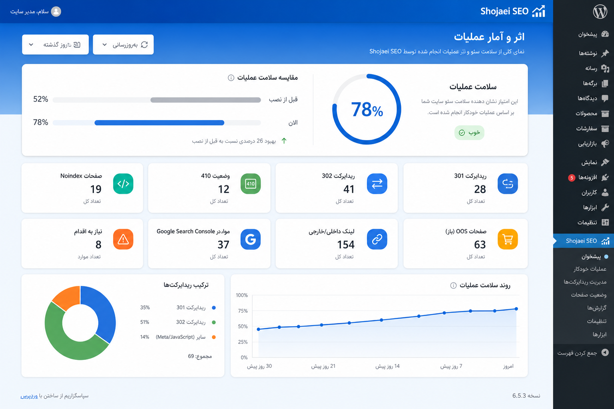

01
Out-of-stock SEO
چرخه چندسطحی ناموجودی، noindex کنترلشده، پیشنهاد جایگزین و تصمیم تدریجی.
Shojaei SEO
Inventory-aware SEO: تصمیم بر اساس موجودی، مدت ناموجودی، جایگزین واقعی، ریدایرکت و بازیابی ایندکس. با Undo، Dry-Run، صف Job و گزارش اثر قابلاندازهگیری.
هسته محصول عملیات موجودی و ریدایرکت است؛ متا و اسکیمای تکراری عمداً به افزونه SEO واگذار میشود.
چرخه چندسطحی ناموجودی، noindex کنترلشده، پیشنهاد جایگزین و تصمیم تدریجی.
۳۰۱ / ۳۰۲ / ۴۱۰ با اعتبارسنجی حلقه، آستانه شباهت و صف اعمال امن.
پیشنمایش قبل از اجرا، ثبت قبل/بعد، بازگشت تکی و دستهای.
جدول اختصاصی، batch کوچک، retry محدود — بدون وابستگی به Redis/SaaS.
تصمیم با تغییر موجودی، قیمت، انتشار و دسته — نه اسکن کور سنگین.
سقف لینک، blacklist/whitelist، بدون لینک به noindex/ریدایرکت، کنترل کامل توسط فروشگاه.
Meta خاموش؛ Product/Breadcrumb با احترام به Yoast/Rank Math واگذار میشود.
شمارش ۳۰۱/۳۰۲/۴۱۰، سلامت عملیات قبل→الان، نمودار روند، پروفایل فروشگاهی.
تشخیص خروجی موازی + بنر مدیر برای خاموشکردن اسکیمای ووکامرس با یک کلیک.
برای فروش و آموزش داخلی: کوتاه، صادق، بدون ادعای جادویی گوگل.
بهجای ریدایرکت فوری همه ناموجودها، محصول وارد فازهای زمانی میشود: پیام صفحه، پیشنهاد جایگزین، کاهش اولویت لینک، noindex، و در نهایت کاندید ریدایرکت. تصمیم از Rule Engine مرکزی میآید تا رفتار در کل افزونه یکدست بماند.
مزیت رقابتی افزونه: پیدا کردن جایگزین همدسته با امتیاز شباهت، جلوگیری از حلقه ریدایرکت، و اعمال از طریق صف Job با امکان Undo. ۳۰۲ برای موقت، ۳۰۱ برای دائمی، ۴۱۰ وقتی مسیر جایگزینی منطقی نیست.
اپراتور اول میبیند «چه تغییری، روی چند آیتم، با چه ریسک»؛ بعد از همان پیشنمایش اجرا میکند. هر batch قابل بازگشت است. داشبورد وضعیتمحور میگوید امن / هشدار / نیازمند اقدام / خطا — نه فقط فرم تنظیمات.
WP-Cron بهتنهایی برای کاتالوگ بزرگ کافی نیست. جابها در جدول اختصاصی با وضعیت pending/running/done/failed ذخیره میشوند و با batch کوچک و retry محدود جلو میروند. Event-driven یعنی وقتی موجودی عوض شد Rule Engine صدا زده میشود؛ جاب روزانه فقط reconcile سبک است.
سقف سخت در صفحه، تراکم در ۱۰۰۰ کلمه، فاصله حداقل، بدون لینک در هدینگ/دکمه/منو، بدون مقصد noindex یا ریدایرکتشده، بدون anchor تکراری. اولویت با دسته، برند، ویژگی و جایگزین واقعی. Whitelist/Blacklist قابل کنترل توسط فروشگاه.
جنگ خروجی متا نداریم. Meta Title/Description پیشفرض خاموش است. اگر افزونه SEO فعال باشد و «احترام» روشن باشد، Product/Breadcrumb چاپ نمیشود؛ FAQ اختیاری میماند. ریدایرکت و OOS هسته این افزونه است.
| بخش | مالک پیشنهادی | نقش |
|---|---|---|
| Meta Title/Description | Yoast / Rank Math | خاموش در این افزونه |
| Schema Product | افزونه SEO + Detector | بدون خروجی تکراری |
| Redirect Logic | Shojaei SEO | هسته |
| Out-of-stock SEO | Shojaei SEO | هسته |
تب «اثر و آمار» نشان میدهد واقعاً چه کردهاید: چند ۳۰۱، چند ۳۰۲، چند ۴۱۰، چند noindex، چند لینک، چند درخواست GSC. درصد «سلامت عملیات» با baseline نصب مقایسه میشود — با زیرنویس صریح که این عدد رتبه گوگل نیست، بلکه نظم عملیات موجودی و ایندکسپذیری است.
اگر Product JSON-LD موازی روی صفحه باشد، مدیر روی فرانت بنر میبیند و میتواند اسکیمای پیشفرض ووکامرس را با یک کلیک خاموش کند — بدون دست زدن به Yoast یا Rank Math.
موکاپ تقریبی تب آمار: سلامت عملیات، کارتهای ۳۰۱/۳۰۲/۴۱۰ و نمودارها. ظاهر نهایی در وردپرس ممکن است کمی سادهتر یا فشردهتر باشد.

نمونه بصری برای ارائه به مشتری / تیم فروش — اعداد نمونه هستند.